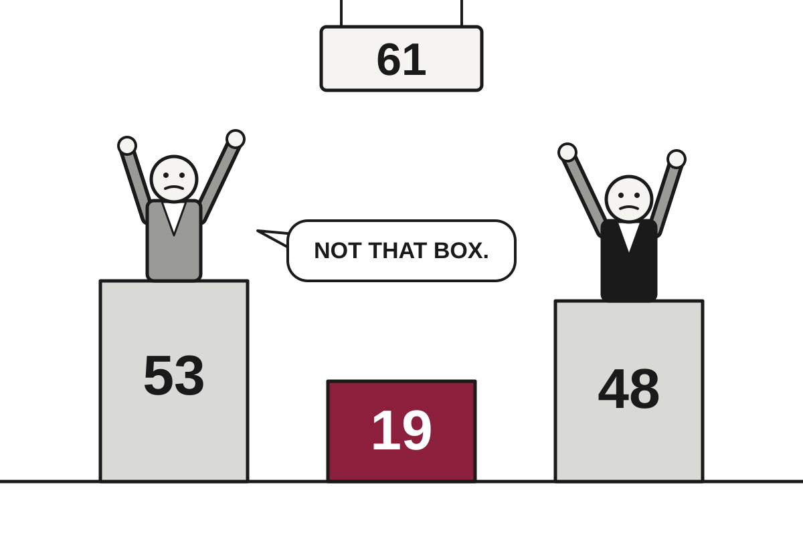

5 Things in 60 Seconds
- Israel's election left Netanyahu's bloc at 53 seats and Eisenkot's at 48, both short of the 61 needed, so Arab-led parties with a record 19 seats hold the leverage that every campaign pledged to ignore.
- Flávio Bolsonaro flew to Miami after losing Brazil's runoff and called himself the country's 'true president,' then downgraded himself to 'leader' within hours, while courts, his own party and observers all accepted the result.
- A Russian drone struck a crowded platform at Dnipro's main railway station, killing at least 14 people, in an attack Moscow says targets military logistics rather than commuters.
- Anthropic has filed to go public at a reported valuation of $1.5 trillion to $2 trillion, with a risk section that thoughtfully covers the scenario in which its own technology is the problem.
- The Fed held rates at 3.75% to 4% on a 10-2 vote with both dissenters wanting a hike, the same week US inflation ran at 3.6% and GDP grew 3.4%, so patience is being tested by the data it asked for.

Israel Votes, Counts, and Discovers Arithmetic: 53 Seats Is Not 61
With 99% of ballots counted, Netanyahu's bloc leads Eisenkot's 53 to 48 in the Knesset, but neither side has a majority, and Arab-led parties holding 19 seats may decide who governs.
The wire said: Netanyahu's bloc leading Israel election but short of majority, partial results show · BBC World
Partial results from Tuesday's election show Prime Minister Benjamin Netanyahu's bloc narrowly ahead of Gadi Eisenkot's, but short of a majority, the BBC reported. With 99% of ballots counted, Likud and its far-right and ultra-Orthodox allies were on track for 53 of the 120 Knesset seats. Eisenkot's Yashar party and three other Jewish opposition parties were set for 48. A majority requires 61, a number that neither side has and both have promised to reach.
The remaining seats belong to Arab-led parties, which are on course to win an unprecedented 19. Translation: after a decisive night of voting, the people with the most leverage are the ones both camps spent the campaign pledging not to call. According to the BBC, all but one of the Jewish parties have said they will not work with them. That is a firm position for as long as it is not the only route to a majority.
Geopolitics

Defeated Brazilian Candidate Flees to Miami, Declares Himself 'Leader' of Country That Just Voted Otherwise
Flávio Bolsonaro lost Sunday's runoff, left via Argentina and Ecuador on a private jet, and published a letter claiming a title he then edited down within hours.
Flávio Bolsonaro landed in Miami on Wednesday morning after losing Brazil's presidential election, and published a letter calling himself the country's "true president," according to The Guardian. He later deleted it and posted a revised version in which he was merely "the leader of Brazil," DW reported. Translation: the demotion took about seven hours and required no vote.
The facts of the election are not in much dispute among people with the authority to dispute them. Bolsonaro's own party said on Monday, "We recognise the presidential result." Brazil's electoral court, supreme court and the presidents of both houses of congress rejected his fraud claims, which he made without evidence, and international observers endorsed the vote. Brazil's three largest newspapers called his declaration "coup-mongering," The Guardian said.
China Expels Record 33 Party Members, Fills Empty Seats by Emptying Others

A Communist Party plenum with the lowest attendance of Xi Jinping's rule ended with a record purge, 16 military figures among the expelled, and a call for more loyalty and more initiative.
Drone Hits Dnipro Rail Platform as Sanctions Debate Runs on Diesel

At least 14 people were killed at a crowded Ukrainian station, while Kyiv argues that easing sanctions on Russian fuel is the wrong signal.
Lagarde to Leave ECB Nine Months Early, Conveniently Before French Voters Get a Say

The ECB president will step down on February 7, giving current EU leaders time to pick her successor before France's April presidential election.
Elsewhere on the wire
Audio reveals exchanges between control centre and drivers before deadly Spain train crash BBC WorldFrance football chief backs Real Madrid’s Mbappe after China apology Al JazeeraEgypt fines prominent editor Lina Attalah and shuts independent news outlet Mada Masr The GuardianUS and Japan agree to establish a Japanese facility for joint missile production NPR WorldIndia increases growth forecast for fiscal year DWAfrica’s ‘unprecedented’ Ebola outbreak could reach UK, says top health official The GuardianAI

US Spied on Executive Dining With Nvidia CEO, Then Left Him Out of the Loop
The New York Times reports US agencies suspected a Singapore cloud executive of passing information to Beijing, while Nvidia says she was just another customer.
US intelligence agencies spent about a year watching an executive at a Singapore AI cloud company because they suspected she might be a Chinese spy, according to anonymous sources cited by the New York Times. The executive, Alice Huang (also known as Huang Le) of Megaspeed, had been photographed at several business dinners with Nvidia CEO Jensen Huang. The two share a surname and, apparently, a taste for regional networking.
The concern, per TechCrunch's summary of the Times report, was that she had grown close enough to the Nvidia chief to collect information about the company's plans. That included his efforts to persuade the Trump administration to let Nvidia ship more advanced technology to China. Translation: the worry was that someone who might be reporting to Beijing was sitting near the person lobbying Washington to sell Beijing more chips.
Google Releases Gemini 4 Carbon Two Weeks After Argon, Lets Almost Nobody Use It

The new model tops an independent intelligence index at 59 points, but access is limited to selected security experts while it goes through U.S. government pre-testing.
Google Discovers AI Search Pays Less, Responds by Adding More Ads

Alphabet's stock fell sharply after search revenue growth slowed to 12 percent, and the company said it will spend significantly more on AI in 2027.
Microsoft Offers 60,000 Employees a Way Out, Citing Strong Belief in Their Future Elsewhere

The company is extending voluntary buyouts to roughly a quarter of its workforce across four countries, as it tries to fund AI infrastructure without cutting AI infrastructure.
Elsewhere on the wire
The Download: AI agent tracking and climate feedback loops MIT Technology ReviewParis-based Mistral releases "Le Chonk," a strong coding model that still trails China overall The DecoderEx-Palantir execs launch Dream with $17M from a16z to build AI world models for construction TechCrunch AIThe NYT Cooking app is testing AI recipe modifications The Verge AIWe urgently need to monitor AI agents’ actions in real time MIT Technology ReviewUS antitrust regulators are scrutinizing Nvidia's Hugging Face deal and sales practices The DecoderTechnology

Apple Unveils Touchscreen MacBook Pro After 15 Years of Saying Touchscreens Were a Bad Idea
The new OLED MacBook Pro starts at $2,899 and lets users poke the screen, a feature Apple executives spent over a decade calling fatiguing, ergonomically terrible and, in one case, a toaster-refrigerator.
Apple on Tuesday announced the first major MacBook Pro redesign in more than five years, according to Ars Technica. It has an OLED display (Translation: each pixel makes its own light, so black is actually black) and a touchscreen, which is new to macOS. The company has also named the panel PROLED XDR, which is the kind of name that only gets approved after many meetings.
The specifications are strong. Ars Technica reports the display reaches 2,000 nits of peak brightness (Translation: bright enough to be seen outdoors, or to annoy a seatmate on a plane) and a claimed 10,000,000:1 contrast ratio. It keeps the 120 Hz variable refresh rate. Apple referenced burn-in protection, the tendency of OLED screens to retain ghost images, but did not say how it works. The 14-inch model weighs 3 pounds, about half a pound less than before.
DoorDash to Buy Instacart for $17 Billion, Promises This Is About Main Street
The all-but-cash deal, valued at $65 a share, would merge the two biggest names in delivering things to your door, and is not expected to close until late 2027 at the earliest.
Ofcom Tells Social Media Firms to Work Out Who Is 16, Declines to Say How
The regulator listed four 'highly effective' age checks for the UK's March under-16 ban, then left the tech companies to do the actual work.
Mistral Releases Weights of 1-Trillion-Parameter 'Le Chonk,' Asks Everyone to Please Use It Responsibly
The French AI lab says its open-weight Mistral Large 4 leads open models in coding, while also admitting its own guardrails may let someone conduct real attacks.
Elsewhere on the wire
This open-source project lets you sync Withings data to other apps without a subscription The VergeTomas Mikolov (creator of Word2Vec) receives the Medal of Merit Hacker NewsSpaceX no longer needs NASA, and that's a problem for America's space agency Ars TechnicaJoshua Kushner’s Thrive Holdings is acquiring ADT for $7.6 billion The VergeFor the first time ever, Google Search is less than 50% of Alphabet's revenue Hacker NewsULA's Vulcan rocket is set to return to flight on Friday the 13th Ars TechnicaMarkets & Economy

Economy Grows 3.4% While Inflation Declines to Leave, Fed Says It Needs More Data
Third-quarter GDP beat forecasts and jobless claims hit near-1960s lows, but September prices rose 0.5% and the Fed is still in no hurry.
The U.S. economy grew at a seasonally adjusted annualized rate of 3.4% in the third quarter, beating the 3.1% economists expected and the 2.2% pace of the second quarter, the Commerce Department reported Thursday, according to CNBC. The same morning, the department said inflation accelerated in September. The Federal Reserve, which had just finished saying it would wait for more information, received it promptly.
Start with the prices. The personal consumption expenditures price index, the Fed's preferred inflation gauge, rose 0.5% in September, its largest monthly gain since March, putting the annual rate at 3.6%. Translation: if you bought the same basket of goods a year ago and again today, it costs 3.6% more, against a Fed target of 2%. Core PCE, which strips out food and energy because they bounce around, rose 0.3% for the month and 3.1% for the year. Officials generally treat core as the better guide to where inflation is heading, which is convenient, since it is the less alarming number.
The culprit was energy. Gasoline and other energy goods rose 9.2% in the month, and energy goods and services broadly rose 5.4%, CNBC reported. Economists fear this could spread elsewhere, and there are early hints: services prices excluding energy and housing rose 0.4%, and housing costs rose 0.3%. Brent crude, the global oil benchmark, stood at $123.10 as of Oct. 27, according to the latest official data, which suggests the gasoline problem is not shy.
ECB Holds Rates at 2.5% After Debating Whether Not Raising Them Was Brave Enough
The central bank paused despite 3.8% euro zone inflation, while markets quietly bet on a December hike and Christine Lagarde announced her departure the same day.
ServiceNow Falls 25% After Meeting Expectations, Which Turns Out to Be Insufficient

The enterprise software firm posted $4.11 billion in revenue and raised its outlook, yet had its worst day ever as investors again asked whether AI will eat the software business.
Britain Taxes Banks, Cuts Bills, and Asks Markets Not to Notice

Chancellor John Healey's first budget raises the bank surcharge to 6% while lowering household energy costs, and gilt yields and bank shares both moved the right way.
| Series | Last | Chg | Period | Trend |
|---|---|---|---|---|
| SPY | $768.14 | −0.54% | +5.31% | |
| Nasdaq | 26,549.85 | +0.27% | +6.72% | |
| VIX | 16.91 | −0.61 | −3.75 | |
| Brent crude | $123.10 | −3.92% | +34.07% | |
| Dollar index | 121.32 | −0.03% | +0.62% | |
| 2Y Treasury | 4.70% | +0.02 | +0.37 | |
| 10Y Treasury | 4.99% | −0.01 | +0.30 | |
| Fed Funds | 3.88% | ±0.00 | +0.25 | |
| CPI inflation (YoY) | 3.74% | +0.34 | +1.30 | |
| Unemployment | 4.20% | +0.10 | +0.10 |
Elsewhere on the wire
Medicare used AI to pre-approve patient care, and it immediately led to a large drop in medical services MarketWatchCrocs shares surge on raised forecast as HEYDUDE turnaround gains traction Investing.comAlphabet earnings miss reflects first real sign that AI is taking a bite out of search CNBC MarketsAll the reasons Marvell investors are ’freaking out’ as Lumentum deal rumors swirl MarketWatchSteve Eisman gets more conservative with portfolio as AI trade nears 'tipping point' CNBC MarketsThe politics of President Lagarde's European Central Bank early exit — and who could replace her CNBC EconomyPhoto credits
- Defeated Brazilian Candidate Flees to Miami, Declares Himself 'Leader' of Country That Just Voted Otherwise: Private jet at Glasgow Airport - geograph.org.uk - 5440951 by Thomas Nugent, CC BY-SA 2.0, via Wikimedia Commons
- China Expels Record 33 Party Members, Fills Empty Seats by Emptying Others: 20251026 Great Hall of the People by Windmemories, CC BY-SA 4.0, via Wikimedia Commons
- Drone Hits Dnipro Rail Platform as Sanctions Debate Runs on Diesel: Kings Cross Railway Station Platforms 5 to 8, London, UK - Diliff by Diliff, CC BY-SA 3.0, via Wikimedia Commons
- Lagarde to Leave ECB Nine Months Early, Conveniently Before French Voters Get a Say: Seat of the European Central Bank and Frankfurt Skyline at dawn 20150422 1 by DXR, CC BY-SA 4.0, via Wikimedia Commons
- Anthropic Files to Go Public, Lists Own Possible Extinction of Humanity as Business Risk: CreditRich Nasdaq Tower NYC by Aylakinn, CC BY-SA 4.0, via Wikimedia Commons
- US Spied on Executive Dining With Nvidia CEO, Then Left Him Out of the Loop: Data centre by Earthranger, CC BY-SA 3.0, via Wikimedia Commons
- Google Releases Gemini 4 Carbon Two Weeks After Argon, Lets Almost Nobody Use It: Front of server racks at NERSC by Derrick Coetzee from Berkeley, CA, USA, CC0, via Wikimedia Commons
- Google Discovers AI Search Pays Less, Responds by Adding More Ads: Data center infrastructure in the United States by DOE/National Renewable Energy Laboratory (NREL), Public domain, via Wikimedia Commons
- Microsoft Offers 60,000 Employees a Way Out, Citing Strong Belief in Their Future Elsewhere: Broadcomheadquarters by Coolcaesar, CC BY-SA 3.0, via Wikimedia Commons
- DHS Learns Its Staff Directory Can Be Public After All, Just Not Through Official Channels: Songde Government Office Building view from Xinyi Road 20191013 by Solomon203, CC BY-SA 4.0, via Wikimedia Commons
- Apple Unveils Touchscreen MacBook Pro After 15 Years of Saying Touchscreens Were a Bad Idea: Toshiba Satellite S40t laptop - 10087025595 by liewcf, CC BY-SA 2.0, via Wikimedia Commons
- Mistral Releases Weights of 1-Trillion-Parameter 'Le Chonk,' Asks Everyone to Please Use It Responsibly: Front of server racks at NERSC by Derrick Coetzee from Berkeley, CA, USA, CC0, via Wikimedia Commons
- Fed Holds Rates, Cuts Number of Times It Will Be Asked to Change Them: Eccles Building (26088200676) by Federalreserve, Public domain, via Wikimedia Commons
- Economy Grows 3.4% While Inflation Declines to Leave, Fed Says It Needs More Data: Eccles Building (26088200676) by Federalreserve, Public domain, via Wikimedia Commons
- ECB Holds Rates at 2.5% After Debating Whether Not Raising Them Was Brave Enough: Seat of the European Central Bank and Frankfurt Skyline at dawn 20150422 1 by DXR, CC BY-SA 4.0, via Wikimedia Commons
- ServiceNow Falls 25% After Meeting Expectations, Which Turns Out to Be Insufficient: Frankfurt Stock Exchange (Ank Kumar) 01 by Ank Kumar, CC BY-SA 4.0, via Wikimedia Commons
- Britain Taxes Banks, Cuts Bills, and Asks Markets Not to Notice: Big Ben and the Houses of Parliament from the London Eye by PhilDaBirdMan, CC0, via Wikimedia Commons